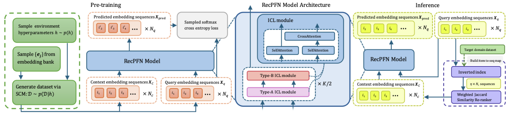
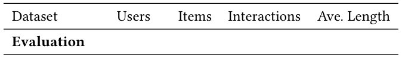
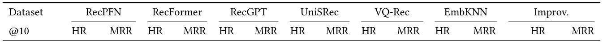
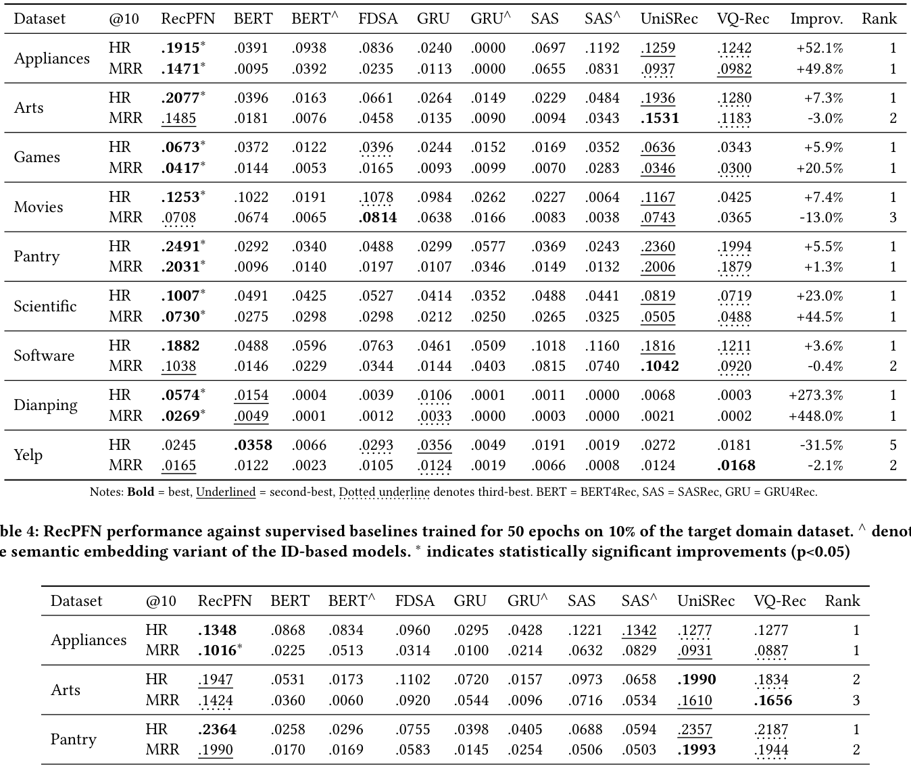
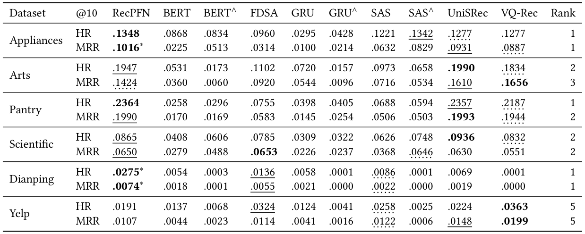
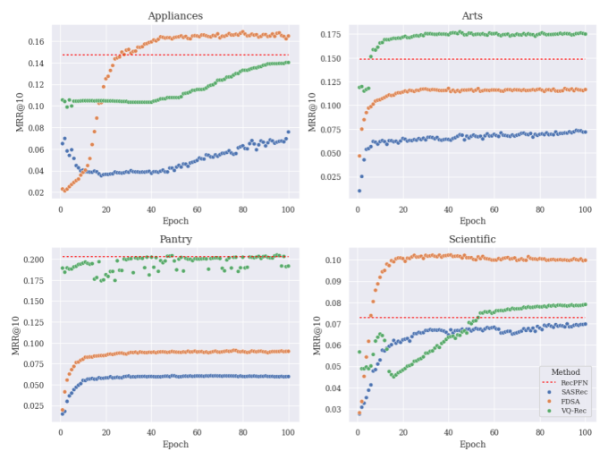

RecPFN: Prior-Fitted Networks for In-Context-Based Recommendations (基于先验拟合网络的上下文学习式推荐)
- 会议/期刊: SIGIR 2026 (49th International ACM SIGIR Conference)
- 推荐链路定位: 召回 (Retrieval) — 以 next-item 预测形式做全库 Top-K 检索
- 研究方向: 序列与会话推荐 / 大语言模型推荐 (ICL 范式)
- 论文原文: https://arxiv.org/abs/2608.19735v1
- 开源代码: https://github.com/SAP-samples/tabular-ai-recpfn
TL;DR (核心速览)
针对序列推荐"每个新域都要重训、跨域预训练难以真正零样本迁移"的痛点，RecPFN 提出首个基于嵌入的 PFN 式上下文学习 (ICL) 序列推荐器：完全在合成点击流环境（结构因果模型 SCM 先验采样）上预训练，推理时仅凭少量目标域 support 序列做单次前向即可预测 next-item，无需任何权重更新。在 8 个公开基准的 Full-Ranking 协议下，零样本 HR@10/MRR@10 全面超越 RecFormer/RecGPT/UniSRec/VQ-Rec/EmbKNN（如 Appliances +53.2%/+48.1%），并在低算力、低数据监督对比中保持强竞争力。
Background & Motivation (背景与动机)
- 领域背景与主流范式: 序列推荐已从 RNN/CNN 演进到 Transformer（SASRec/BERT4Rec），近年两条"通用推荐器"路线兴起：(i) LLM prompting 把历史与候选格式化为文本做排序；(ii) 在大量真实交互语料上预训练推荐专用架构（UniSRec/VQ-Rec/RecGPT/RecFormer）做跨域迁移。
- 现有方法局限 (Limitations of Prior Work):
- 强序列模型依赖大域内数据与大量在线训练算力，新域冷启动部署成本高；
- LLM prompting 路线延迟高，且难以捕捉隐式协同信号；
- 混合域真实数据预训练难以实现真正零样本迁移——用户偏好与交互模式高度依赖具体环境（setting-dependent），域无关的跨域嵌入对齐在新环境中常常失效。文中一个极具说服力的观察是：无学习的 EmbKNN（最近物品嵌入余弦检索）经常追平甚至击败预训练基线，直接质疑了域无关预训练的有效性。
- 核心挑战 (Key Challenge): 推荐的行为逻辑是"环境特异"的，那么能否不依赖任何真实交互语料、不更新权重，就让模型在推理时"读懂"新域的行为动力学？
- 核心洞察与切入点 (Key Insight): 借用 PFN（Prior-Fitted Networks）思想——在多样合成分布上训练以摊销贝叶斯推断，使模型学会"从少量 support 样本推断后验预测分布"的通用算法。作者用结构因果模型 (SCM) 先验生成海量合成点击流环境，把"域适应"转化为"上下文条件化"，从而绕开真实数据依赖与权重更新。
Problem Formulation & Method (问题定义与方法架构)
1. 符号定义与输入表征 (Notations & Input Representations)
- 物品库 \(\mathcal{I}=\{1,\dots,N\}\)，用户历史 \(S_{1:t}=(s_1,\dots,s_t)\)，\(s_\tau\in\mathcal{I}\)；任务为预测 \(s_{t+1}\)。
- 环境（假设）\(h\in\mathcal{H}\) 定义序列演化律 \(p(j\mid S_{1:t},h)\)，先验 \(p(h)\) 编码对合理环境的信念；RecPFN 中 \(h\) 由 SCM 及其超参实例化。
- 输入 prompt：\(N_c\) 条 support 序列 + \(N_q\) 条 query 序列，均 padding 到长度 \(L\)、嵌入维度 \(D\)，即 \(X=(X_c,X_q)\)，\(X_c\in\mathbb{R}^{N_c\times L\times D}\)，\(X_q\in\mathbb{R}^{N_q\times L\times D}\)。
- 物品嵌入由 gte-Qwen2-1.5B-instruct 生成（非 ID 查表），这是"embedding-based PFN"的关键前提。
2. 整体流水线 (Overall Architecture)
数据流：SCM 先验采样合成环境 \(\to\) 生成 support/query 序列与物品嵌入 \(\to\) 6 层交替 Type-A/Type-B ICL 模块（序列内因果自注意力 + query-to-support 交叉注意力）\(\to\) 输出 next-item 嵌入 \(\hat{e}_{pred}\) \(\to\) 与目标域物品嵌入做余弦相似度全库检索 Top-K。推理时 support 集由倒排索引 + recency-weighted overlap 在线检索得到。

flowchart TD
A["合成环境采样: SCM 超参 h ~ p(h)"] --> B["生成物品嵌入 E 与转移矩阵 T"]
B --> C["按 SCM 采样 support/query 序列"]
C --> D["ICL 主干: 6 层交替 Type-A(求和头,无FFN) / Type-B(标准MHA+FFN)"]
D --> E["序列内因果自注意力 + query-to-support 交叉注意力"]
E --> F["输出 next-item 嵌入 ê_pred"]
G["目标域: 倒排索引检索 support 集 (recency-weighted overlap)"] --> D
F --> H["与目标域物品嵌入余弦相似度 Full-Ranking Top-K"]3. 核心模块设计与数学原理 (Key Designs & Formulations)
(1) 贝叶斯目标：摊销后验预测分布 (PPD)
给定观测数据 \(\mathcal{D}\) 与 query 前缀 \(S_{1:t}\)，金标准预测为
PFN \(f_\theta\) 直接以 \((S_{1:t},\mathcal{D}_c)\) 为输入输出 \(\pi_\theta(\cdot\mid S_{1:t},\mathcal{D}_c)\)，通过最小化联合先验下的期望交叉熵来摊销该积分：
物理直觉：模型不是学"某个域的物品共现"，而是学"如何从上下文样本中推断环境的转移结构"这一元算法。
(2) SCM 合成点击流生成（先验的载体）
每个环境定义 \(N\) 个物品、嵌入 \(e_j\in\mathbb{R}^{D_{item}}\)、转移分数矩阵 \(T\in\mathbb{R}^{N\times N}\) 与流行度 \(P_{pop}\)。序列生成：
即近期加权转移（短期序列模式）+ 全局流行度（长期静态吸引力）的混合，并排除已见物品。转移矩阵由两类互补先验构造：
- 随机图先验：每物品采样 \(k_{rel}\) 个后继邻居置 \(T_{jk}=1\)，自环概率 \(p_{self}\)，其余为 0 —— 建模"固定后继集合"（剧集、捆绑包）的稀疏拓扑型转移；
- 潜因子先验：采样 \(L_{embed}\in\mathbb{R}^{D_{latent}\times D_{item}}\)、\(T_{latent}\) 与稀疏物品-因子映射 \(F\in\mathbb{R}^{N\times D_{latent}}\)（每行约 \(k_{fac}\) 个 \(\pm1\) 非零），令
由于 \(L_{embed}\) 与 \(T_{latent}\) 独立采样，特征相似度与序列转移被解耦（矩阵分解是 \(T_{latent}=I\) 的特例）。这一设计直接对应真实推荐中"嵌入相近 ≠ 会被连续点击"的现象。物品嵌入从 BEIR（Quora/FIQA/FEVER/MS MARCO）80 万句向量库中采样，保证与下游 gte-Qwen2 嵌入空间对齐。
(3) 交替注意力 ICL 主干
每层先做序列内因果自注意力，再做 query 对 support 的交叉注意力：
- Type-A（求和头，无 FFN）：各头 value 投影到完整维度 \(D\)（\(W_{V_i}\in\mathbb{R}^{D\times D}\) 且初始化为单位阵），头输出直接求和而非拼接，去掉 MLP：\(\text{Attn}_A(Z)=\text{LayerNorm}\big(Z+\sum_{i=1}^{N_h}\text{head}_i\big)\)。灵感来自 attention-only transformer 的"序列复制/信息搬运"能力。
- Type-B（标准 MHA + FFN）：\(d_k=D/N_h\)，拼接后过 \(W_O\) 与 FFN，负责学习非线性潜特征。
- Hard-Alibi Masking：前一半头（\(i<N_h/2\)）只允许 token 关注自身与前 \(i\) 个 token（强局部归纳偏置），后一半头用标准因果掩码。
设计直觉：Type-A 负责"从 support 中复制/搬运匹配模式"，Type-B 负责"抽取抽象特征"，二者交替兼顾 copying 与 feature extraction。
(4) 推理期 support 检索（上下文选择器）
从 query 最近物品出发，经物品-序列倒排索引检索至 \(\eta\times N_c\) 规模（\(\eta=10\)），再按 Sim 重排取 Top-\(N_c\)。贝叶斯视角：更相关的 support 集更接近"从环境后验中抽样"，直接提升推断精度。
4. 训练目标、负采样与推理复杂度 (Optimization, Negative Sampling & Complexity)
- 损失函数: 合成数据上的自回归 next-item 预测，采用 sampled softmax loss（对 next item 嵌入做采样 softmax），无 BPR/InfoNCE 温度项；总损失即上文 \(\mathcal{L}(\theta)\) 的蒙特卡洛估计。
- 训练负采样策略: 通过 sampled softmax 的采样负类实现（原文未给出采样数量与分布细节，属"原文未报告"项）；推理阶段为免负采样的全库余弦检索。
- 时间与空间复杂度:
- 预训练：单张 A100 36 小时，两阶段（先随机图先验，再随机图+潜因子等量混合），每阶段至多 120 epoch，每 epoch 500 训练步 + 200 验证步；每步采样 1 个环境，batch 为 \(N_c=128\) support + \(N_q=16\) query；AdamW，lr \(1\times10^{-4}\)，梯度累积 2，warm-up 6 epoch，early stopping patience 20（监控合成验证流上 \(\text{MRR}_{RecPFN}/\text{MRR}_{EmbKNN}\) 比值以归一化环境难度）。
- 推理：单次前向、零梯度更新，batch size 1、context size 8；support 检索靠倒排索引，复杂度近似 \(O(\eta N_c)\) 候选 + 重排；最终 Top-K 为对目标域全库嵌入的余弦相似度（可用 ANN 加速，原文未报告具体延迟 ms/request 与峰值显存）。
- 对比基线：监督模型需在目标域训练（3 epoch 或 50 epoch），RecPFN 目标域训练成本为 0。
Experimental Setup & Evaluation Protocol (实验设置与评估协议)
- 数据集统计与预处理: 8 个公开基准，覆盖 Amazon 电商（Appliances、Arts、Games、Movies、Pantry、Scientific、Software）、Yelp 本地生活、Dianping 中文 O2O。原文表 1 给出统计量（原文未明确说明 5-core/10-core 过滤规则，仅报告平均序列长度，最短 Arts 1.82、最长 Dianping 21.20，暗示过滤强度较弱）：

| 数据集 (Dataset) | 用户数 (#Users) | 物品数 (#Items) | 交互数 (#Interactions) | 平均序列长度 (Ave. Length) | 模态/辅助特征说明 |
|---|---|---|---|---|---|
| Appliances | 703 | 30,252 | 6,875 | 9.78 | 文本语义嵌入 (gte-Qwen2-1.5B) |
| Arts | 1,579,230 | 302,809 | 2,875,917 | 1.82 | 同上 |
| Dianping | 208,596 | 243,247 | 4,422,473 | 21.20 | 中文 O2O，语义嵌入 |
| Games | 100,955 | 71,982 | 733,447 | 7.27 | 语义嵌入 |
| Movies | 450,757 | 182,032 | 4,169,631 | 9.25 | 语义嵌入 |
| Pantry | 247,659 | 10,814 | 471,614 | 1.90 | 语义嵌入 |
| Scientific | 28,096 | 165,764 | 199,798 | 7.11 | 语义嵌入 |
| Yelp | 371,243 | 150,346 | 4,728,381 | 12.74 | 本地生活，语义嵌入 |
| 预训练消融用 Fashion | 8,886 | 186,189 | 44,769 | 5.04 | 仅用于真实数据预训练消融 |
| 预训练消融用 Grocery | 248,194 | 283,507 | 1,841,452 | 7.42 | 同上 |
| 预训练消融用 Movies | 450,757 | 182,032 | 4,169,631 | 9.25 | 同上（与评估集不重叠） |
| 预训练消融用 Sports | 6,703,391 | 957,764 | 12,980,837 | 1.94 | 同上 |
- 数据划分方式 (Splitting Strategy): Ratio Split 70/10/20（train/val/test），且 validation 与 test 各截断至 10,000 样本，其余全部归入训练集。所有方法使用完全相同的划分。注意：这是按样本随机比例划分而非全局时间戳切分，存在一定未来信息泄露风险（序列内部仍按时间顺序，但样本级随机划分可能让同一用户不同时段序列跨集合）；原文未讨论该风险。
- 排名评测协议 (Ranking Protocol): Full-Ranking（全物品库作为候选集），无负采样，属无偏评估，值得肯定。
- 评价指标与显著性检验: HR@10、MRR@10；监督基线在目标域上跑 4 个随机种子取平均；表 3/表 4 中标注 \(*\) 表示相对最强基线的提升在 \(p<0.05\) 下统计显著（原文未说明具体检验方法，如配对 \(t\)-test 或 Wilcoxon，属"原文未报告"）。RecPFN 嵌入维度 \(D\) 由 gte-Qwen2-1.5B-instruct 决定（原文未显式给出 \(D\) 数值）。
Key Experimental Results (核心实验结果)
1. 主实验对比 (Main Results)
零样本对比（表 2）：RecPFN 在 8 个数据集中 7 个取得最佳，唯一失手是 Yelp（HR@10 0.0245 vs EmbKNN 0.0293）。值得注意的是 EmbKNN 在 Arts/Pantry/Yelp 上极具竞争力，印证了作者对"域无关预训练"的质疑。

| 数据集 | 指标 | EmbKNN（最强零样本基线之一） | RecFormer / UniSRec / VQ-Rec 最优 | 本文方法 (Ours) | 相对提升 (Improv.) |
|---|---|---|---|---|---|
| Appliances | HR@10 / MRR@10 | .1206 / .0844 | .1250 / .0993 (RecFormer) | .1915 / .1471 | +53.2% / +48.1% |
| Arts | HR@10 / MRR@10 | .1918 / .1301 | .1851 / .1393 (RecGPT) | .2077 / .1485 | +8.3% / +6.6% |
| Games | HR@10 / MRR@10 | .0471 / .0161 | .0585 / .0330 (RecFormer) | .0673 / .0417 | +15.0% / +26.6% |
| Movies | HR@10 / MRR@10 | .0774 / .0268 | .0875 / .0431 (RecFormer) | .1253 / .0708 | +43.2% / +64.2% |
| Pantry | HR@10 / MRR@10 | .2377 / .1913 | .2069 / .1780 (UniSRec) | .2491 / .2031 | +4.8% / +6.2% |
| Scientific | HR@10 / MRR@10 | .0826 / .0480 | .0827 / .0655 (RecGPT) | .1007 / .0730 | +21.7% / +22.6% |
| Software | HR@10 / MRR@10 | .1448 / .0419 | .1418 / .1096 (RecGPT) | .1882 / .1038 | +30.0% / +11.6% |
| Dianping | HR@10 / MRR@10 | .0220 / .0040 | .0103 / .0088 (RecGPT) | .0574 / .0269 | +160.9% / +204.7% |
| Yelp | HR@10 / MRR@10 | .0293 / .0152 | .0186 / .0172 (UniSRec) | .0245 / — | -16.4% / -4.2% |
低算力监督对比（表 3，全量数据仅训 3 epoch）：RecPFN 在 7/8 数据集 HR@10 排名第 1，多数指标显著（\(p<0.05\)）；Arts 的 MRR 与 Movies 的 MRR 分别落后 UniSRec（-3.0%）与 FDSA（-13.0%），排名第 2/3。

| 数据集 | 指标 | 最强监督基线（3 epoch 全量） | 本文方法 (Ours) | 相对提升 (Improv.) | 排名 |
|---|---|---|---|---|---|
| Appliances | HR@10 / MRR@10 | .1259 / .0982 (UniSRec / VQ-Rec) | .1915* / .1471* | +52.1% / +49.8% | 1 / 1 |
| Arts | HR@10 / MRR@10 | .1936 / .1531 (UniSRec) | .2077* / .1485 | +7.3% / -3.0% | 1 / 2 |
| Games | HR@10 / MRR@10 | .0636 / .0346 (UniSRec) | .0673* / .0417* | +5.9% / +20.5% | 1 / 1 |
论文图表

